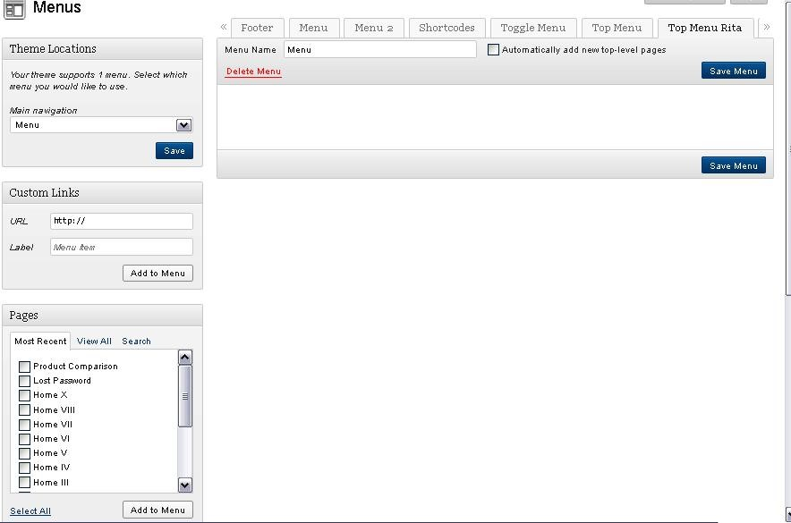
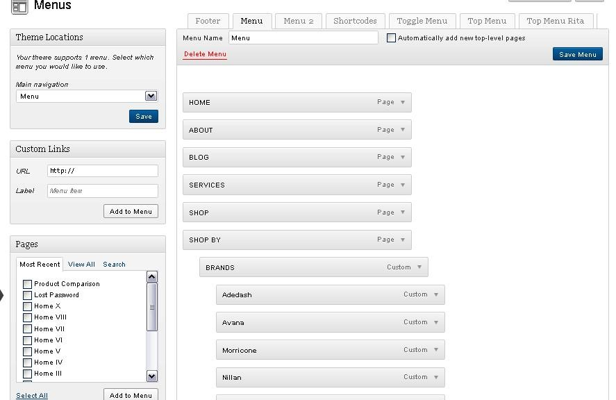
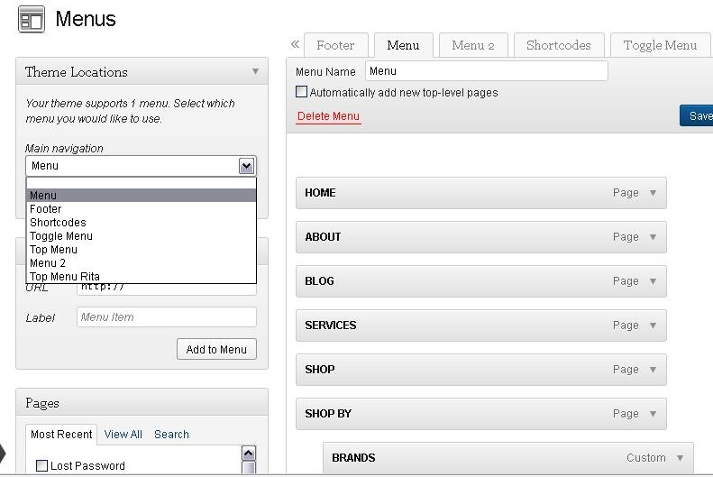
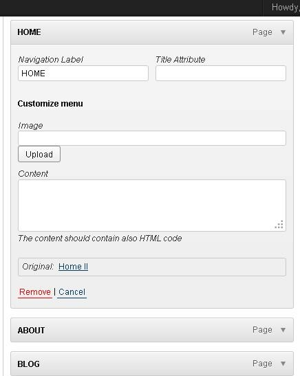
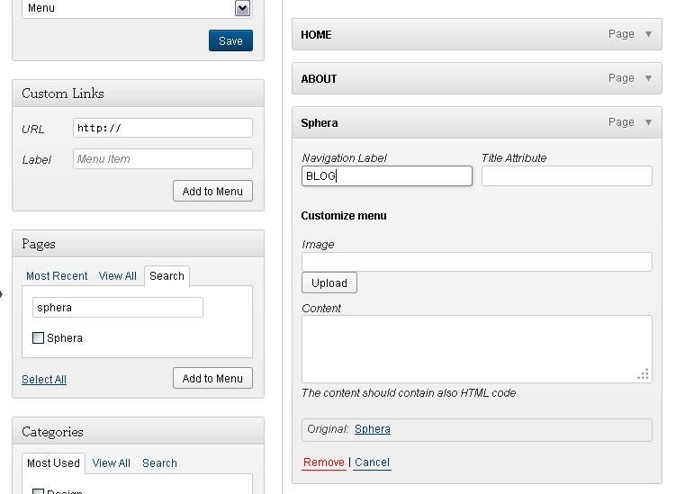
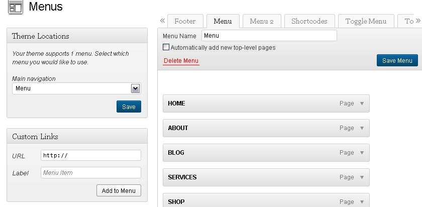

Now that you have tweaked your pages, it’s time to learn how to make your Pages show on the Navigation Bar.
You will choose and arrange your Pages on the Navigation Bar via the “Menus” page. First, go to your WP-Admin left sidebar, click on “Appearance” and then on “Menus”.

If you imported the demo content, your menu will already have pages on it, but if not, you will need to build your Menu like the example above. Begin by giving your Menu a name. In the illustration above, we simply called ours “Menu”.
Next, choose the Pages that will show on your Menu. To do this, scroll down to the bottom left of your Menus page and find “Pages”. Click on the Pages that you want to show on your Menu. **Note - Sometimes only the “Most Recent” pages show. To show all your pages, click “View All”.

Click on the pages you want to show, then click “Add to Menu”, and the pages will appear on your menu like the above example.

Now add your Menu to your Navigation bar. In the above example, we have several customs menus to choose from, but we want to use “Menu”. So we clicked “Main Navigation” to open a drop-down box, then clicked “Menu” for the Main Navigation.
Since you are using the HOME-II page layout as your example, simply go to the “Home” box on the Menu, click on the drop-down arrow, and it will open like the picture below.
But you probably don’t want it to say “Home-II” on your Navigation Bar, you just want it to say “Home”. Therefore, once the drop-down opens (like the image below), change the Navigation Label from “Home-II” to “Home”.
**Note - the bottom of the drop-down still reads “Original: Home-II”, so you know you’re using the right page layout.

Now do the same thing for your Blog. Remember, we chose the “Sphera” blog layout, so you need to choose “Sphera” from your “Page” option and it will be added to the Menu.

Look at the bottom right of this example and see that it is “Sphera” blog page layout. But you may not want your blog page to be called “Sphera,” so delete the name on the Navigation Label and type the name you want in its place. In this example, we called the page “Blog”.
**Note – Click and drag the pages on the right side of your Menu to arrange them in whatever order you desire.

SAVE ALL YOUR CHANGES!
For a more detailed explanation of how to set up your menu in Wordpress, go to: http://codex.wordpress.org/Appearance_Menus_SubPanel